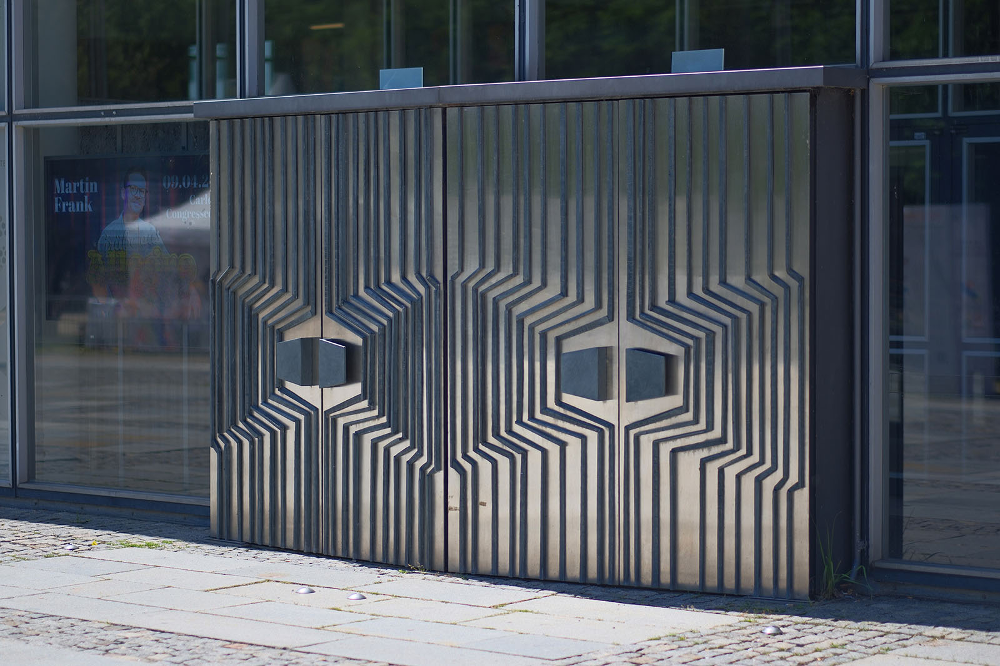
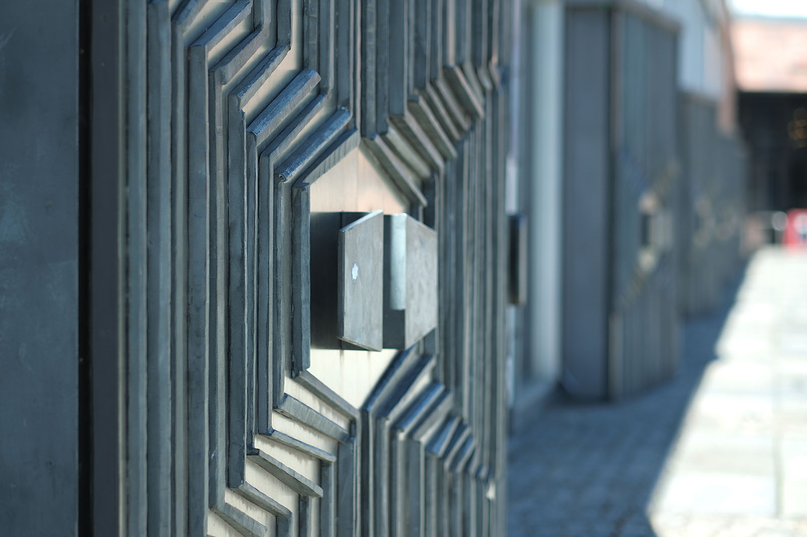
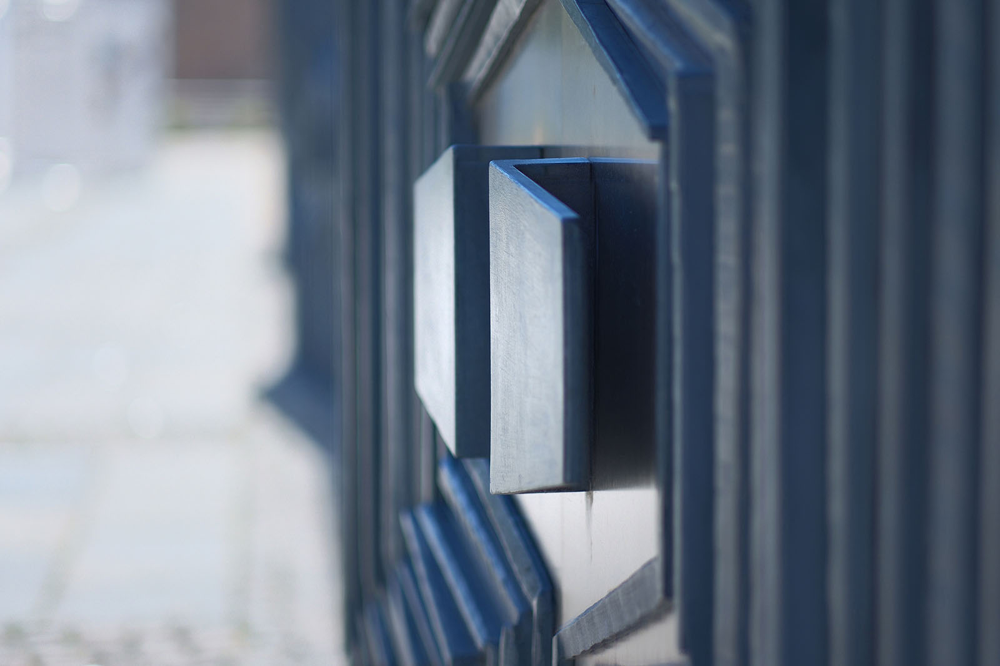
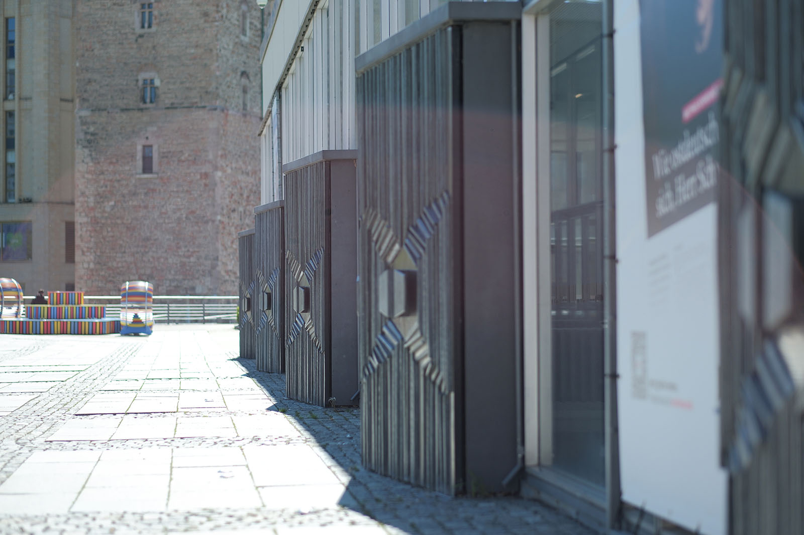
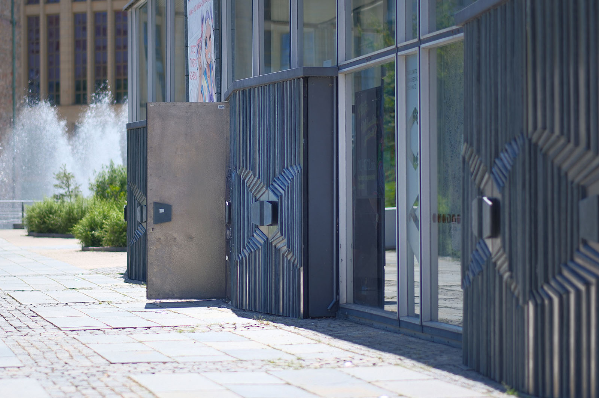

Recherche und Werkbeschreibung: Roman Pilz. Fotografien: Frank Krüger. Text und Bild wechseln sich wie in einem Magazin ab. Ein Klick auf ein Bild öffnet die Großansicht.
Die Planungen zur Neugestaltung der Chemnitzer Innenstadt mit einem zentralen Ort für Kultur und Unterhaltung begannen bereits in den 1950er Jahren. Auf Grundlage des Beschlusses des Rates der Stadt wurden dann 1960 und 1962 Gestaltungswettbewerbe für die Stadthalle durchgeführt. Federführend an der Planung waren das Berliner Institut für Technologie kultureller Einrichtungen sowie dem VEB Hochbauprojektierung Karl-Marx-Stadt mit dem Chefarchitekten Rudolf Weißer beteiligt. Diese beiden Einrichtungen entwickelten 1967 auch den weitestgehend realisierten Entwurf des Komplexes aus Kultureinrichtung und Hotel. Der Bau wurde 1969 begonnen und 1974 abgeschlossen.
Achim Kühn wurde 1942 in Berlin geboren. Kühn absolvierte von 1956 bis 1963 eine Ausbildung und einen Meisterabschluss als Kunstschmied in der Werkstatt seines Vaters Fritz Kühn. Von 1964 bis 1967 studierte er Architektur an der Bauhaus-Universität Weimar und erhielt 1972 als Externer sein Diplom.
Seit 1967 ist Kühn selbständig als Metallbildhauer, Schmied, Fotograf, Fachbuchautor und Restaurator tätig. Der Metallgestalter hat über 100 baugebundenen Arbeiten geschaffen. Weitere Werke entstanden für den öffentlichen Raum, als unikatäre Objekte und Kleinserien.
Er organisierte und lehrte sein Fach zudem als weltweit tätiger Juror und Fortbilder und Referent. Seine Arbeiten werden regelmäßig im In- und Ausland ausgestellt. In Chemnitz sind von Kühne neben den Eingängen zur Stadthalle, auch 4 mit Metall verkleidete Säulen im Foyer des Schauspielhauses an der Zieschestraße zu sehen.
In der Stadt wurde dem Künstler vom 28. Mai bis 14. August 1977 im Museum am Theaterplatz auch eine erste Personalausstellung mit Katalog gewidmet.
Die Planer des Gebäudes verstanden das Gebäude als Verbindung von modernem, industriellem Bauen und funktional gestalteter Architektur mit ideell-gesellschaftlichem Anspruch. Als zentraler, lokaler Begegnungsort sollten vielfältige Nutzungsmöglichkeiten auch in der Architektur sichtbar werden. Die abgestufte, polygonale Gebäudegestalt nimmt dabei auch Bezug auf seine Wirkung in den öffentlichen Raum und sein gebautes Umfeld. Die vielfältige Integration lokaler Materialien und Lösungen sowie zahlreicher Künstler am Bau verstärken dabei die Idee der Stadthalle als Gesamtkunstwerk.
Ausgehend von den als Sechsecken, hexagonal, gestalteten Sälen, wurde das Dreiecksraster zum wesentlichen Gestaltungselement des Gebäudes. Daraus wurden strukturelle Bauformen abgeleitet, die unmittelbar auch auf die Werke der am Bau beteiligten Künstler wirkten. So kommt der abstrakten Kunst in der Stadthalle ein besonderer Stellenwert bei. Der Architekt Rudolf Weißer erklärte: „Die Ausgestaltung der Räume mit Werken der bildenden Kunst wurde frühzeitig während der Projektierung konzipiert, um den notwendigen Zusammenklang von Architektur und Bildkunst zu erreichen und die bildende Kunst nicht zur nachträglichen, dekorativen Zutat zu degradieren.“
Diese frühe Beteiligung ist auch bei den Portalen von Achim Kühn sicht- und nachvollziehbar. Sein planerischer Vorschlag der aufgelockerten Platzierung von fünf "Blöcken" von jeweils zwei 2-flügeligen Türen wurde aufgenommen und umgesetzt. Kühn, der bei anderen Aufträgen auch durchaus figürliche Formen und traditionelle Materialien verarbeitet, verwendete bei den 20 Türen rostfreien Edelstahl – ein Material, das neben Beton und Glas wie kein anderes für die architektonische Moderne des 20. Jahrhunderts steht.

Indem Kühn die 5 Portale breit über die etwa 50 Meter breite gerade Fläche der Glasfassade verteilt, rhythmisiert er deren Erscheinungsbild wesentlich. Die Portale springen leicht aus der Front hervor und die beiden stoßen Türpaare in einem extrem stumpfen Winkel aufeinander. So nimmt er gestalterisch das polygonale geometrische Konzept des Bauwerks auf und "öffnet" die Türen nicht nur frontal, in eine Richtung, sondern fächerartig nach links und rechts in den Stadtraum.
Auch das materielle Wechselspiel zwischen durchsichtigem Glas und opakem Metall oder die wechselnden Lichtspiegelungen bei sich bewegender Beobachterperspektive erhöhen den reinen Schauwert, auch bei geschlossenen Türen.

Die Außenflächen werden von Kühn mit handwerklich geschmiedeten Edelstahlrohren wie ein Relief gestaltet. Die schlichten, trapezförmigen Handgriffe sind im Zentrum der Türfläche paarweise und symmetrisch angeordnet. Ihr Körper ergibt zusammen ein Sechseck und ruht visuell über einer sechseckigen Fläche, die den Blick freigibt auf das metallisch schimmernde, glatte Edelstahlblech, das bildlich den Hintergrund darstellt.
Das Gesamtbild der Türen wird aber vor allem durch die mehr oder weniger regelmäßig angeordneten Vertikalen geprägt. Die durch die manuelle Bearbeitung in Breite und Durchschnitt leicht variierten, gebogenen Stäbe erscheinen wie sich vervielfältigende, eckige Klammern. Spiegelbildlich wogen sie auf den beiden Türflügeln wie stufige Wellen, die vom hexagonalen Zentrum nach außen abstrahlen.

Auf der Innenseite der Türen bearbeitet Achim Kühne das Blech weniger dreidimensional. Mit "Königswasser", einem Säuregemisch, ätzt er chemisch ein wenige Millimeter tiefe Strukturen in die Fläche, die durch ihre organisch und zufällig geformten Umrisse wie eine natürliche Patina oder eine von einer Flüssigkeit benetzte Fläche wirken.
Die Türen der Stadthalle können als eine der gelungensten Auftragsarbeiten des Metallgestalters angesehen werden und erfüllen zudem auch noch seit Jahrzehnten ihren funktionalen Zweck, Besucher von außen nach innen (und umgekehrt) zu geleiten.

Großes Tor mit vielen Türen
Achim Kühn: „Dekorative Türgestaltung“, Edelstahlblech, Stadthalle (1974)
